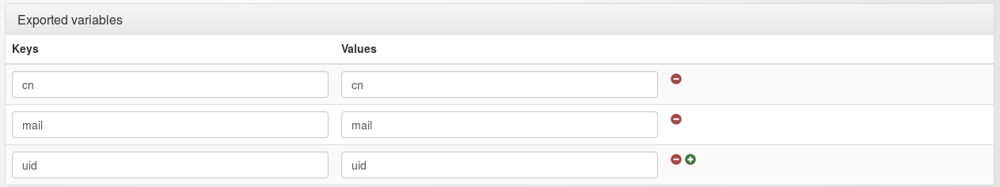

Exported variables are the variables available to write rules and headers. They are extracted from the users database by the users module.
To create a variable, you've just to map a user attributes in LL::NG using Variables » Exported variables. For each variable, The first field is the name which will be used in rules, macros or headers and the second field is the name of the user database field.
Examples for LDAP:
| Variable name | LDAP attribute |
|---|---|
| uid | uid |
| number | employeeNumber |
| name | sn |
You can define exported variables for each module in the module configuration itself. Variables defined in the main Exported variables will be used for each backend. Variables defined in the exported variables node of the module will be used only for that module.

Exported variables, this allows to populate user session with some environment values. Environment variables will not be queried in users database.
Macros and groups are calculated during authentication process by the portal:
$hGroups which is a Hash Reference of this form:$hGroups = { 'group3' => { 'description' => [ 'Service 3', 'Service 3 TEST' ], 'cn' => [ 'group3' ], 'name' => 'group3' }, 'admin' => { 'name' => 'admin' } }
Example for macros:
# boolean macro isAdmin -> $uid eq 'foo' or $uid eq 'bar' # other macro displayName -> $givenName." ".$surName # Use a boolean macro in a rule ^/admin -> $isAdmin # Use a string macro in a HTTP header Display-Name -> $displayName
Example for groups:
# group admin -> $uid eq 'foo' or $uid eq 'bar' # Use a group in a rule ^/admin -> $groups =~ /\badmin\b/ # Or with hGroups ^/admin -> defined $hGroups->{'admin'}